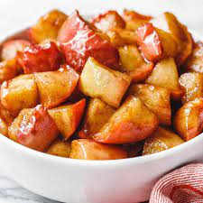

Cinnamon Baked Apples

Description
Treat your family to this traditional and healthy pudding that will fill your kitchen with the delicious scent of spiced apple.
Incredients
- 6 SPAR Freshline Apples
- 125 ml SPAR brown sugar
- 125 ml SPAR Mixed Nuts, chopped
- 60 ml SPAR Coconut Flakes
- 65 ml raisins
- 65 ml SPAR butter
- 3 ml ground cinnamon
- 3 ml ground ginger
- 2 ml ground nutmeg
Steps
- Preheat oven to 180°C.
- Cut the top off each apple (reserve for later). Using an apple corer, melon baller or spoon, hollow out inner core and seeds from inside of each apple up to bottom. Do not cut through the apple. Excluding the core and seeds, chop up the removed apple finely.
- Combine the chopped apple, brown sugar, nuts, coconut, raisins, butter, cinnamon, ginger, and nutmeg.
- Place apple shells in a greased baking dish. Fill each cavity with the filling mixture. Sprinkle remaining brown sugar-nut mixture on top of apples. Top with the lids.
- Bake apples 30 to 40 minutes or until desired tenderness, rotating baking dish halfway through baking. Spoon juices remaining in dish over apples and serve warm with SPAR Ice cream.
Home